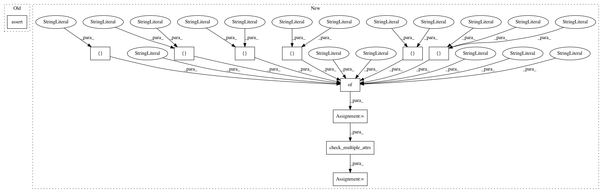

68a4df40dc818732d736e7b36ca4dbe75e22aec0,arviz/tests/test_data.py,TestDataNetCDF,test_io_function,#TestDataNetCDF#Any#Any#,630
Before Change
assert os.path.exists(filepath)
assert os.path.getsize(filepath) > 0
inference_data2 = from_netcdf(filepath)
assert hasattr(inference_data2, "posterior")
os.remove(filepath)
assert not os.path.exists(filepath)
After Change
inference_data = self.get_inference_data( // pylint: disable=W0612
data, eight_schools_params
)
test_dict = {
"posterior": ["eta", "theta", "mu", "tau"],
"posterior_predictive": ["eta", "theta", "mu", "tau"],
"sample_stats": ["eta", "theta", "mu", "tau"],
"prior": ["eta", "theta", "mu", "tau"],
"prior_predictive": ["eta", "theta", "mu", "tau"],
"sample_stats_prior": ["eta", "theta", "mu", "tau"],
"observed_data": ["J", "y", "sigma"],
}
fails = check_multiple_attrs(test_dict, inference_data)
assert not fails
// check filename does not exist and save InferenceData
In pattern: SUPERPATTERN
Frequency: 4
Non-data size: 11
Instances
Project Name: arviz-devs/arviz
Commit Name: 68a4df40dc818732d736e7b36ca4dbe75e22aec0
Time: 2019-07-15
Author: oriol.abril.pla@gmail.com
File Name: arviz/tests/test_data.py
Class Name: TestDataNetCDF
Method Name: test_io_function
Project Name: arviz-devs/arviz
Commit Name: 87cd71c927c8006c135c9a0e8ebea8cb6a64852d
Time: 2019-03-28
Author: oriol.abril.pla@gmail.com
File Name: arviz/tests/test_data.py
Class Name: TestCmdStanNetCDFUtils
Method Name: test_inference_data_input_types3
Project Name: arviz-devs/arviz
Commit Name: 87cd71c927c8006c135c9a0e8ebea8cb6a64852d
Time: 2019-03-28
Author: oriol.abril.pla@gmail.com
File Name: arviz/tests/test_data.py
Class Name: TestCmdStanNetCDFUtils
Method Name: test_inference_data_input_types4
Project Name: arviz-devs/arviz
Commit Name: 87cd71c927c8006c135c9a0e8ebea8cb6a64852d
Time: 2019-03-28
Author: oriol.abril.pla@gmail.com
File Name: arviz/tests/test_data.py
Class Name: TestCmdStanNetCDFUtils
Method Name: test_inference_data_input_types2